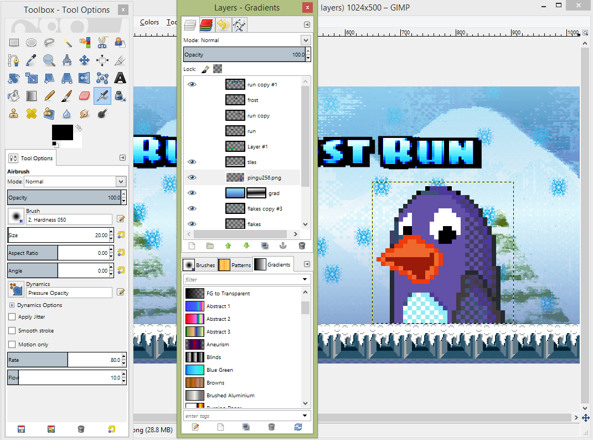

Tools used in the Run Frost Run development
The game is based on the Godot engine. All game assets were created using free or open source software. In this post I would like to give the credit to the tools used in the development.
Gimp
Gimp is an open source image editor. In the Run Frost Run project this editor is used mostly for creating backgrounds. Since graphics style in Run Frost Run is aiming to old school 16-bit games, images should have besides its low resolution also a small color palette. Gimp has a function to convert a RGB image to indexed one. This function allows us to create smaller color palette and also incorporate the dithering to an image.
LMMS and Audacity
LMMS is an open source digital audio workstation. This software is used to create the background music. LMMS contains plenty of samples and instrument presets as well as possibility to install VST instruments. Audacity is used to create and edit sound effects. It allows to generate noise, change pitch, alter frequencies with equalization or adjust bass and treble.
Piskel and Paletton
Piskel is browser-based editor for animated sprites and pixel art. It is easy to use and allows to define multiple custom palettes. In order to find out the suitable color scheme for the sprites and tiles, another useful web-based application called Paletton is used.
Godot

Godot is a powerful open source game engine. Godot projects are composed of scenes containing objects. Such objects are sprites, collision shapes, path and so on ...